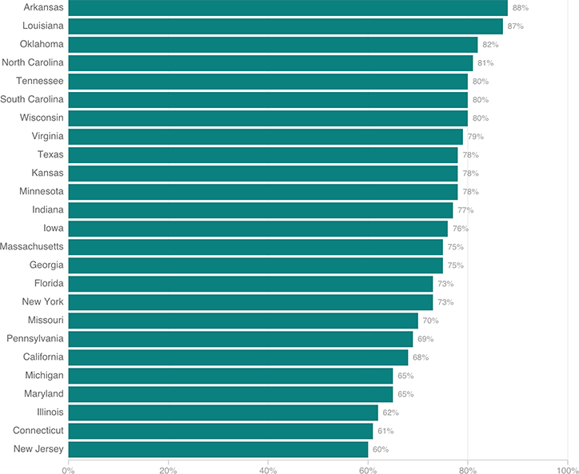

A Majority Of Workers’ Comp Claims Involving Pain Meds Included Opioids

Notes
— Claims studied were for injuries occurring between Oct. 1, 2009, and Sept. 30, 2010.
— The study included 25 states, representing two-thirds of workers’ comp benefits paid in the United States.